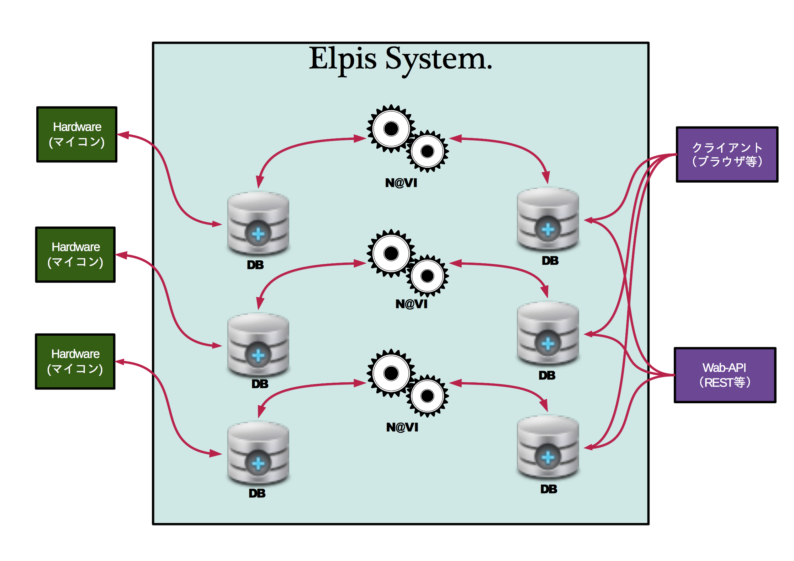

本資料は、ArtifactNoiseが制作した資料であり、一部開発中の物も含まれている場合があります。
最新の情報、ご質問等は info@ArtifactNoise.com までご連絡ください。
Elpisとは、ArtifactNoiseが制作した「Webとハードウェアをシームレスに繋げる為のフレームワーク」です。 Elpisは、ハードウェア開発で培ったノウハウと、Webアプリケーション技術をうまく融合したフレームワークです。 他のWebフレームワークとは違いElpisはハードウェアに特化しています。 また、ハードウェア特有のリアルタイムな動きや、安定した動作を得意としています。 ElpisはハードウェアをWeb-APIとして提供することが出来る為、 既存のブラウザやiPhone,Android等にもハードウェアを扱う事が出来ます。
Elpisは、サーバーとハードウェアとWebサービスとのシームレスな接続を実現します。 Elpisは三ブロックで構成されており、ハードウェアと双方向通信を行うブロックと、 操作や表示を行うWeb-API処理ブロックと、それらを連携させ処理を行う中央ブロックの三種によって成り立っています。
本章では、Elpisとハードウェア、Elpis本体、ElpisとWEB-API(ブラウザ等)の三ブロックで説明を行います。
ハードウェアはクライアントとしてサーバに接続します。 ハードウェアをクライアントで動作させるため、ハードウェアがある場所の、ネットワーク環境に左右される事無く通信を行う事が出来ます。 サーバーとハードウェアとの通信は、一般的なブラウザとサーバーとの関係と変わらず、ハードウェアはHTTPでサーバーとの通信を行います。 サーバーとハードウェアはElpisを使い、最短0.01sで双方向通信が可能となります。（実測値AN調べ） ハードウェアにはオリジナルIDを含むことで、ハードウェア一台一台選択して操作を行う事が出来ます。
Elpisで扱うハードウェアは、ArtiafctNoiseが制作した専用ハードウェアを使う方法と、 RaspberryPiやArduinoを使ったPC経由による疑似接続を行う方法もあります。 Elpisではどちらの接続もハードウェアサービスとして認識します。
ハードウェアをElpisに接続する前に、ハードウェアにはデバイスID、サービスID、 その他ハードウェアをサービスとして操作する為の情報を予め記述して置きます。 Elpisでは、それらの情報を用いてハードウェアを選択し実行するアプリを切り替えます。 また、Elpisで取り扱うハードウェアには、ElpisのサーバーアドレスとElpisとHTTP通信をする為のテンプレートを用意してあります。
ElpisはPythonを使って作られたフレームワークです。 ハードウェア特有のリアルタイムな通信(0.01s程度)を処理するために必要最小限な機能を実装しました。 また、Elpis本体には、常に高速な動作を常時行うハードウェアと、操作する一瞬しか通信しないWebAPIとの時間差を埋めるため、 Elpis内部でDBを生成し、それぞれの時間差を吸収する方法で、作業の効率化をはかりました。
Elpisに接続されたハードウェアは全て、既存のWeb-APIと同じ手法(RestFullに近い形)で取り扱う事が出来ます。 例えば、室温を計測するハードウェアに対して今の室温を知る為にはIDとサービス名を指定し、GETを送れば取得出来ます。 また、ロボット等が繋がったハードウェアに対しても、IDとサービス名を指定しPUTをすればハードウェアを動かす事が出来ます。 このように、ハードウェアをよりWebに近づかせる為の技術として、Elpisフレームワークがあります。
本記事の内容及び技術的ご質問について info@artifactnoise.com までご連絡ください。
本開発は、ArtifactNoiseが普及を目指すメイドロボット、並びにメイド指向アーキテクチャを実現するための技術です。 本技術及びアイディアをビジネスや企画でご活用いただける場合はご連絡ください。
ビジネスに関するお問い合わせも、info@artifactnoise.com までご連絡ください。
| 初版: | 2013/07/11 |
|---|---|
| 改良: | 2013/07/21 誤字修正 |
| 作成者: | ArtifactNoise http://artifactnoise.com/ |
| 分類: | Elpis |
| 開発参加者: | Yuta Kitagami , Shota Koshimizu. |
{kind=link}
{kind=link}